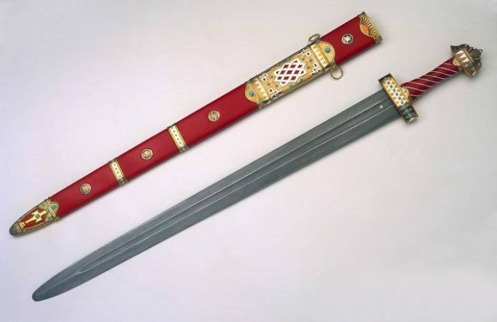
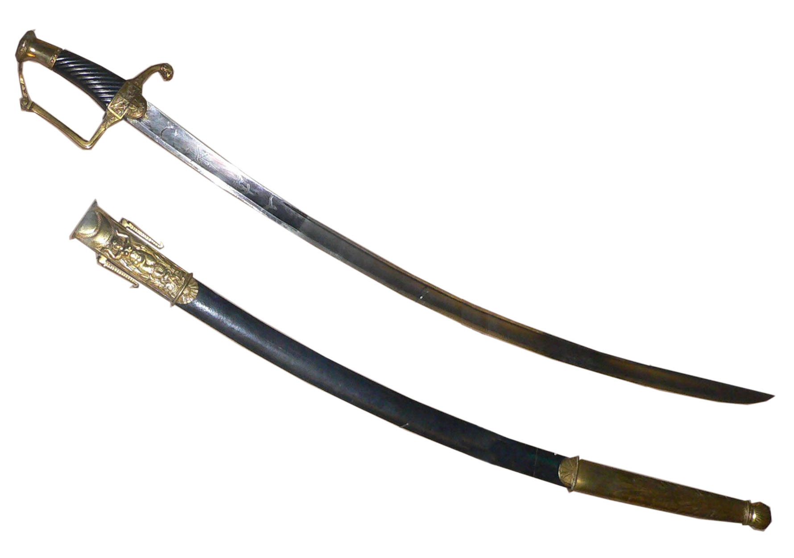
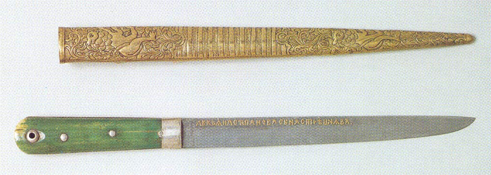
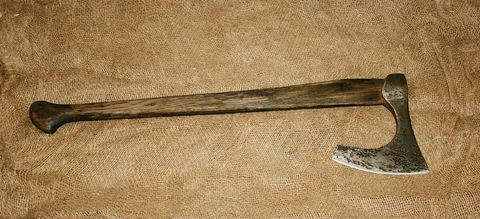
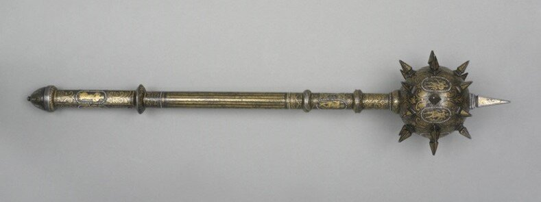
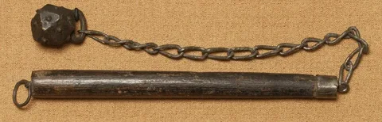
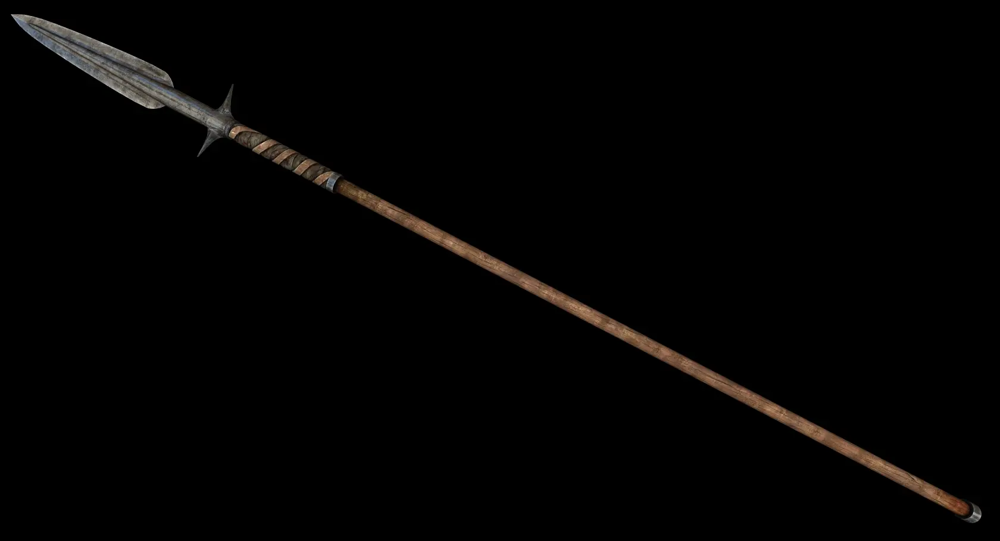

В разых странах существуют разые разновидности холодного оружия
У восточноевропейских народов, как и у народов Западной Европы, одним из основных видов клинкового оружия являлся меч, используемый феодальной знатью. Условно они подразделяются на две основные группы — каролингские и романские. Мечи каролингского типа относятся к периоду IX — первой половины XI веков. Находки подобных мечей, а обнаружено их в общей сложности немногим более 100 экземпляров, сконцентрированы в нескольких регионах Древней Руси: в Юго-Восточном Приладожье, в некоторых районах Смоленщины, Ярославля, Новгорода, Черниговщины, Киевщины, на Днепре у острова Хортица, но встречаются и в других краях (областях, странах) Руси. Как правило, клинок состоял из стальных лезвий, наваренных на металлическую основу. Эта основа чаще была железной, но не всегда. Она могла состоять, например, из трёх стальных пластин; из двух стальных пластин на железной сердцевине; быть цельностальной; из двух дамаскированных пластин на железной сердцевине. Встречались и дешёвые цельножелезные цементированные мечи. В среднем их длина составляла около 95 см, а масса достигала 1,5 кг. Рукоять состояла из перекрестья, навершия и стержня, по конструкции которых можно классифицировать находки. Мечей XI—XIII веков найдено около 75. Это связано с тем, что постепенно их перестали класть в захоронения. Они стали меньше предшествующих мечей: средняя длина до 86 см и масса около 1 кг. Становится уже дол. Упрощается и технология. Вместе с тем известны и тяжёлые мечи, до 2 кг и 120 см. Рукоятки некоторых мечей X—XI в. украшались древнерусским орнаментом. В целом, мечи, используемые на Руси, особо не отличаются от бытовавших в других странах Европы. К тому же выделяются напротив лёгкие и более удобные для конного боя мечи. Если мечи были, в основном, рубящим оружием, то в XIII веке важным становится колющее действие. Мечи импортировались из Западной Европы, а точнее — из Каролингской империи. Однако многие рукояти к ним делались на Руси. Существовало и местное производство самих клинков, однако оно было крайне незначительно. Известно два артефакта с русскими подписями. Первый — меч из Фощеватой (близ Миргорода), датируемый 1000—1050 годами, на доле которого дамаскированной проволокой наведена кириллическая надпись — с одной стороны «коваль», с другой — «Людоша» (эта надпись нечёткая, есть и другие варианты, в частности «Людота»). Общая длина меча — 85,7 см, клинок 67,9 см, его ширина 4,9—3,8 см. Бронзовая рукоять выполнена в скандинавско-прибалтийском стиле. Второй меч был найден в Киевском уезде, датируемый серединой X века. Сохранился он плохо, только обломок клинка длиной 28 см и шириной 5,3 см и перекрестье рукояти длиной 9,3 см. Перекрестье украшено медной и серебряной проволочной инкрустацией. С одной стороны клинка — кириллическая надпись «Слав», полностью не сохранившаяся по причине сломанного меча, она представляла собой имя кузнеца-изготовителя (как и Людоша). С другой стороны — неизвестные, загадочные символы. Есть ещё несколько мечей, рассматриваемых, как, возможно, древнерусского производства. Однако их число по сравнению с импортом крайне мало, почему — неизвестно. Мечи типа А-местный производились в одном из ремесленных центров Древней Руси.
С X века русскими воинами начинает применяться сабля, заимствованная вместе с самим своим названием из хазаро-мадьярского комплекса вооружения. Этим оружием, очевидно, пользовались преимущественно конные воины, причём более распространена была на юге и юго-востоке. На X—XIII века на Руси найдено около 150 сабель, что немногим меньше, чем мечей. О месте производства сабель судить трудно — существовал как импорт, так и местное производство; что из этого превосходило — сказать нельзя. Сабли знатных людей украшались золотом, серебром, чернью. В X веке сабли ещё малочисленны — на древнерусских памятниках этого времени найдено всего 7 сабель и их фрагментов; в XI—XIII вв. сабли проникают на север Руси. Однако меч, всё же, остаётся более важным оружием. В целом, сабли Восточной Европы и соседей были похожи. Поначалу их длина достигала 1 метра, кривизна 3—4,5 см. В XII—XIII длина сабель увеличивается на 10—17 см, кривизна достигает 4,5—5,5 и даже 7 см. Ширина в среднем составляла 3—3,8 см, однако иногда достигала 4,4 см. Так что сабли, в отличие от мечей, становились более массивными. Активно модифицировалась конструкция рукояти, существовало несколько её русских типов. Технология изготовления сабельных клинков изучена хуже. Чаще они были цельностальными. С XII века их ковали из заготовок из науглероженного железа, после чего проводили многократную закалку по особо сложной технологии, в результате чего получалось изделие с требуемой разнородностью — наиболее твёрдым было лезвие. Вместе с тем, и до этого, производили немонолитные клинки. В одном случае их сваривали из двух полос — к стальной полосе с лезвием приваривали железную полосу, образующую тупьё. В другом лезвие из стали, обычно, высокоуглеродистой, вваривали в полосу, которая иногда уже состояла из железной и малоуглеродистой стальной полос.
Важным дополнительным оружием был нож. До XI века изредка применялись скрамасаксы — большие, до 50 см боевые ножи шириной 2—3 см. Однако в IX веке для Руси это оружие было уже архаично, находки его крайне немногочисленны, а в XI веке скрамасакс, по-видимому, исчезает вовсе. Другие боевые ножи мало отличались от хозяйственных, довольно редко превосходили 20 см и редко применялись в бою. Отличием было разве лишь утолщённая спинка и удлинённый черенок. Нож был предметом, используемым как мужчинами, так и женщинами. Ножи, носимые в сапогах — засапожники. Рукояти ножей делались из кости или дерева, могли украшаться орнаментом. Деревянные рукояти иногда обматывали серебряной проволокой. Иногда рукоятки были цельнометаллическими — из меди. Клинки ножей чаще делали путём наварки стального лезвия на железную основу. Часто также они состояли из трёх сваренных полос — стальной посередине и железных по бокам. Реже встречались цельностальные или цельножелезные ножи, ещё реже — цементированные. Другие варианты, такие, как ножи со сложноузорчатой сваркой, были очень редки. Кинжалы на Руси относились к числу не самых распространенных видов оружия, возможно из-за того, что их функцию выполняли засапожники и подсаадачные ножи. Русские кинжалы по своей удлинённо-треугольной форме и конструкции были весьма сходны с европейскими кинжалами XII—XIII вв.
Весьма распространенным оружием был топор. На территории Древней Руси их найдено около 1600. Они применялись славянами издревле, а, как оружие, письменными источниками упоминаются ещё в VIII веке. Можно разделить топоры на рабочие и боевые, однако такое разделение будет неточным; помимо того рабочие топоры вполне могли применяться на войне. Можно выделить три группы: Специальные боевые топорики-молотки, с украшениями, характерные по конструкции и небольшие по размеру. Боевые топоры — универсальные инструменты похода и боя — напоминали производственные топоры, но были меньше их. Небольшие узколезвийные топорики с вырезным обухом и верхними и нижними щекавицами — исключительно военного назначения. Применялись до XII века. Топоры с оттянутым вниз полотном, двумя парами боковых щекавиц и удлинённым вырезным обухом; были наиболее массовым типом. Возможно, имеют русское происхождение, распространились в конце X века; в XII—XIII их конструкция упростилась за счёт замены щекавиц на мысовидные выступы с тыльной стороны обуха. Бородовидные топоры с вырезом, опущенным лезвием, прямой верхней гранью и боковыми щекавицами с нижней стороны обуха. Имеют североевропейское происхождение. Применялись с X по XII века. До XIII века применялись также похожие топоры с двумя парами щекавиц, а в XIII — вовсе без них. Норманнские секиры с широким лезвием. Узколезвийные топоры, с боковыми щекавицами, праобразцы которых в Восточной Европе относятся к первой половине I тысячелетия н. э.. Они более свойственны финно-уграм, чем славянам, и имеют, преимущественно, бытовое назначение — число боевых среди них крайне мало. Широколезвийные секиры, хоть и встречались, но редко, и отмечены в XI веке. Они являются предшественниками бердышей. Рабочие топоры, более тяжелые и массивные, на войне, вероятно, применялись редко. Боевые топоры от общего числа составляют более 570. Обычные размеры топоров первых двух групп: длина лезвия 9-15 см, ширина до 10—12 см, диаметр обушного отверстия 2—3 см, вес до 450 г (топориков-чеканов — 200—350 г). Рабочие топоры заметно крупнее: длина от 15 до 22 см (чаще 17—18 см), ширина лезвия 9-14 см, диаметр втулки 3—4,5 см, вес обычно 600—800 г. Топорики-чеканы отличались тем, что с обуха были снабжены небольшим молотком. Они пришли с юго-востока, а число находок — чуть менее 100. Они отличались треугольным, реже — трапециевидным лезвием. Возможно, русское происхождение имеют наиболее массовые топоры с боковыми щекавицами, а зачастую и оттянутым вниз лезвием, и удлинённым вырезным обухом. Применялись также секиры северного типа, со скруглённым лезвием. В общем, арсенал используемых топоров был очень разнообразен. Топоры делались из стали, и нередко отличались наварным лезвием. Длина рукояти в среднем составляла около 80 см.
Булавы появляются ещё в древности, распространение их в русском войске в XI веке — результат юго-восточного влияния. Железных и бронзовых наверший древнерусских булав найдено более 100. Их собирательное древнерусское название — кий (по-польски и украински так до сих пор называется палка, особенно увесистая). К числу древнейших русских находок относятся железные навершия (реже — бронзовые) в форме куба с четырьмя крестообразно расположенными массивными шипами. Они датируются ещё IX—XI веками. Немногим позднее появляется их упрощённая форма — куба со срезанными углами. Роль шипов играли пирамидальные выступы. Такие булавы были наиболее распространены в XII—XIII веках (почти половина находок), применялись и простым населением, включая крестьян. Вес наверший составлял 100—350 г. Иногда встречались булавы-клевцы. Они были такой же формы, как предыдущие, но с одной стороны снабжались клювовидным выступом. В XII—XIII веках распространяются бронзовые, залитые свинцом булавы сложных форм с 4—5 пирамидальными шипами. Иногда они золотились. Масса их наверший составляла 200—300 г. Распространяются и бронзовые навершия с 4 большими и 8 малыми шипами такого же веса, иногда с декоративными выпуклостями вокруг шипов. Это был второй по распространённости тип — более четверти находок. Помимо булав с шипами, применялись булавы с шаровидными навершиями, чаще железные, а также многолопастные булавы. Их вес был 150—180 грамм. С XIII века начинается использование шестопёров. Булавы были более распространены на юге Руси, особенно в Киеве, чем на севере. Они были оружием как конницы, так и пехоты. Длина рукояти в среднем была не менее 50—60 см. В пехоте применялись и палицы, дубины, ослопы.
Кистень — легкое (100—250 г) и подвижное оружие, позволяющее нанести ловкий и внезапный удар в самой гуще тесной схватки. На Русь кистени пришли в X веке, как и булавы, из областей кочевого Востока и удерживались в снаряжении войска вплоть до конца XVII века. Кистень, как и нож, был и мужским, и женским оружием, и применялся как простым народом, так и князьями. Причём они были распространены и на юге, и на севере Руси. На период до XIII века найдено около 130 ударных грузов. Поначалу преобладали костяные, но вскоре они практически полностью были вытеснены металлическими. Они были сделаны из железа, бронзы (нередко налитой свинцом) или меди. Отличались разнообразием форм. Костяные грузы, обычно вырезанные из рога лося, были сферической или яйцевидной формы, массой 100—250 г. Они составляют около 28 % находок и бытуют до XIII века, но уже после XI встречаются редко. Шаровидные или грушевидные металлические гири нередко снабжались выступами для усиления поражающего действия. Они делались из железа, или из бронзы, иногда заливались свинцом. Гладкие и гранёные гири датируются второй половиной X—XIII веками. Их вес колебался от 63 до 268 г. С XII века появляются грузы с горошковидными выпуклостями, массой 120—235 г. Иногда же сферические гири делались с валиками, в том числе спиральными. Всего этот тип составляет около 36 % находок, то есть он был основным, а число гирь с выпуклостями и без них примерно равно. Грушевидные уплощённые, отлитые из бронзы и залитые свинцом, украшались чернью. Они найдены только на юге, в основном, в Киевской области. Они имели вес 200—300 г и датируются XII—XIII веком, составляя до 16 % находок. Близкими являются круглые, уплощённые гири, которые появились немногим раньше и были менее распространены. Существовали и более сложные формы, но встречались они редко. Ударный груз в виде железного (реже медного) куба со срезанными углами, на каждую грань которого напаян крупный шарик — такие производились на Руси в XII—XIII веках, и составляют всего лишь 5 %. Их вес составлял около 200 г. Бронзовый груз с 5 массивными и 8 малыми шипами — такие похожи на 12-шипные булавы, но отличаются шаровидными окончаниями больших шипов. Железные биконические грузы — их нижняя часть представляет собой полусферу, а верхняя — конус с вогнутыми образующими.
Копья также были древним и распространённым оружием. Сведения об их военном использовании относятся ещё к VI веку. Их существовало несколько видов, а наконечников найдено около 800. Маленькие метательные дротики — сулицы, использовались и для нанесения колющих повреждений. Можно выделить следующие типы наконечников копий: Ланцетовидное, ромбическое в сечении перо, плавно переходящее во втулку. Связаны с северным (скандинавским) влиянием. X—XI века. Ромбическое, с гранью на лезвии. Встречались очень редко. IX—XI века. Широкое удлинённо-треугольное перо, в сечении ромбическое или заострённо-овальное; массивная втулка. Очень распространённый тип. Форма наконечника в данных пределах была различной, и иногда он был довольно широкий, а иногда — наоборот, и подобное копьё напоминало пику (со временем преобладают именно узкие наконечники). Перо продолговато-яйцевидной формы со скруглёнными плечиками, плавно переходящими в невысокую втулку. Перо лавролистной формы. Сюда входят рогатины — массивные копья, вес которой составлял 700—1000 г (при весе обычного копья 200—400 г). Распространяются с XII века. Перо в виде четырёхгранного стержня, в сечении ромбического, квадратного, или, реже, в виде равноконечного креста. С воронковидной втулкой. Это были пики. До XI—XII века они были вторым по распространённости, после удлинённо-треугольного типа, а затем превзошли его. Древнейшие находки относят к VIII веку. Вытянуто-треугольный наконечник с черешком. Появляются около VI века, в XI выходят из употребления. Копья с двушипным пером (гарпуны), два острия были направлены назад, чтобы обеспечить застревание наконечника в теле. Скорее всего, предназначались для охоты. Копья с ножевидным наконечником. Встречались довольно редко. Хотя наконечники копий нередко ковались цельностальными (изредка цельножелезными), часто встречались и более технологичные образцы. Так, применялись наконечники из железной основы, на которую наварены стальные лезвия; а также копья с многослойным пером, вваренным во втулку; реже — цементированные наконечники.
 NEXT